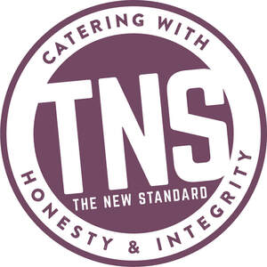
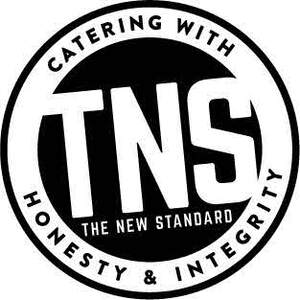

Trade Mark Journal No.2025/049 5 December 2025
UK00004263336 12 September 2025 (35,41,42,43,44)
Mark 1

Mark 2

- Class 35
- Business management of a catering, reception or cleaning budget; catering business management, organisation and assistance; advice and information relating to the business of supply and/or provision of food and beverages; business and commercial management of restaurants, bars, snack-bars, bistros, canteens, cafes, tea shops, coffee shops and takeaways; arranging of buying of foodstuffs, beverages, alcohol, cutlery, crockery, table linen, kitchenware and cooking apparatus, utensils and equipment; financial records management of restaurants, bars, snack-bars, bistros, canteens, cafes, tea shops, coffee shops and takeaways; preparation and analysis of catering and cleaning financial statements for businesses, public bodies and educational establishments; financial statement preparation and analysis for restaurants, bars, snack-bars, bistros, canteens, cafes, tea shops, coffee shops and takeaways; human resources and recruitment services, in relation to catering, reception and cleaning staff; temporary assignment and selection of employees, in relation to catering, reception and cleaning staff; information, advisory and consultancy services relating to all the aforesaid services.
- Class 41
- Organisation, arrangement and conducting of entertainment, recreational, sporting and social events; arranging and conducting conferences relating to education, business, catering and/or provision of food and beverages; entertainment services; club entertainment services; discotheque services; night club services (entertainment); party, ball, conference, wedding and event planning (entertainment) and organisation; provision of information, advice and consultancy in relation to all the aforementioned services.
- Class 42
- Design services relating to parties and events; interior design services; interior and graphic design services; design services relating to food; design services relating to parties, balls, weddings, conferences and events; provision of information, advice and consultancy in relation to all the aforementioned services.
- Class 43
- Services for providing food and drink; provision of food and drink for consumption on or off premises; food and menu planning; catering services; catering services for conference centres; provision of food and drink for businesses, public bodies, retirement homes, care homes and educational establishments; hospitality services relating to the provision of food and drink; corporate hospitality relating to the provision of food and drink; services for the organisation of catering at conferences, functions and events; contract food services; food and drink preparation services; food cooking services; restaurant, bar, snack-bar, bistro, canteen, cafe, tea shop, coffee shop and takeaway management services; rental of cooking equipment, apparatus and utensils; restaurant bar, snack-bar, bistro, canteen, cafe, tea shop, coffee shop and takeaway services; retirement home services; provision of food and drink by the way of meals on wheels services; banqueting services; booking and reservation services for businesses, public bodies and educational establishments; cocktail lounge services; hospitality services (food and drink); information, advisory and consultancy services relating to all the aforesaid services.
- Class 44
- Care home services.
T(n)S Catering Management Limited
Representative: Groom Wilkes & Wright LLP